TrStudio Dev Guide — Creator
- §1 pointer
- Creator — menu structure
- Role-based shell & access control
- Screen-by-screen code map
- Creator · Sign in
- Creator · Create account
- Creator · Reset password
- Creator · Setup required
- Creator · Home
- Creator · Avatar Studio (flagship)
- Creator · Character Library
- Creator · Image Studio
- Creator · Voice Studio
- Creator · Video Studio
- Creator · Prompt Studio
- Creator · Gallery ("My Library")
- Creator · Projects
- Creator · Compare
- Creator · Library
- Creator · Account & spend
- DEFECTS FOUND
✅ Runtime-verified 2026-07-05 — exercised as Creator/Owner via the
/dev/sessionseam in the ONE unified role-basedTrStudioapp (BRD-86, ADR-012 supersedes ADR-001; the separateTrStudioAdminhost is retired). Fresh per-role live smoke (Playwright headless,.smoke/results.json) confirms the Creator lands on the studios shell with no management nav (hasStudios:true,hasMgmtNav:false) and is bounced to<AccessDenied>on/admin/*(deniedVisible:true, registry table not shown, admin API → 403); the Owner sees both surfaces with an in-app "Switch to Management" control. All 15 Creator screens were booted and observed at runtime, and a screenshot of each is embedded below (docs/screenshots/TrStudio/). All screens VISUAL-OK. Prompt Studio (/prompt-studio, Phase 10 — the 16th Creator screen) added + runtime-verified 2026-07-07 (live web :5099 + API :5102 via/dev/session: render gate — picker→2 registry rows, reactive vision badge, all 3 prompt-use actions; §4b VISUAL-OK @1280/390; degrades cleanly to a synthetic reply when no LLM is configured — RAG-005). NOTE: the FE↔API route defects logged to the checklist (UI-010/030/040/053/011) did not surface as render-empty because they're swallowed by try/catch — they were functional (the backend call never landed), not visual — all fixed + re-verified live 2026-07-04 (*fix-issues): voice →/voice/synthesize+/preset-voices, avatar script-assist →/rag/script, video →/video/edit, library preset vocab (201), character-bible GET now called. The Known-issues bullets on each screen below describe what WAS caught; the checklist rows are nowVerified.Purpose: screen-by-screen code map for the Creator role of the unified
TrStudioapp — every Creator-facing screen with its Razor file, controls, data lineage (control → client → API → engine → table) and known gotchas. The Creator surface is role-gated: studios only, no management nav, and any/admin/*route renders<AccessDenied>in-app (see §Role-based shell & access control).
§1 pointer#
Creator-role screens of the ONE unified role-based TrStudio app (BRD-86, ADR-012 supersedes ADR-001 — the former TrStudioAdmin host is retired). After login the surface is role-gated: a Creator sees the studios only; /admin/* renders <AccessDenied>. Index + architecture cheat-sheet: TrStudio-DevGuide.md.
Creator — menu structure#
The sidebar is data-driven: AppSidebar.razor renders Shell.Current.Groups for the active surface from DI (AppSidebar.razor:29-50). The active surface is chosen by the signed-in role via AppShellNavigation (src/TrStudioUI/Navigation/AppShellNavigation.cs:59-60) — for a Creator that surface is TrStudioNavSets.CreateCreatorNavigation (src/TrStudioUI/Navigation/TrStudioNavSets.cs:20-42), two groups (Studios + Workspace) and no management nav. The sidebar-footer "Switch to Management" control renders only when Shell.CanSwitchSurface is true — i.e. Owner only (AppSidebar.razor:52-61, AppShellNavigation.cs:55-56,69-70); a Creator never sees it. See §Role-based shell & access control for how the surface + /admin/* gate are resolved.
| Group | Item | Icon | Route | Razor file | Nav source (file:line) |
|---|---|---|---|---|---|
| Studios | Avatar Studio | user | /avatar | Pages/Avatar/AvatarStudio.razor | TrStudioNavSets.cs:26 |
| Studios | Characters | users | /avatar/characters | Pages/Avatar/CharacterLibrary.razor | TrStudioNavSets.cs:27 |
| Studios | Image Studio | image | /image | Pages/Image/ImageStudio.razor | TrStudioNavSets.cs:28 |
| Studios | Video Studio | video | /video | Pages/Video/VideoStudio.razor | TrStudioNavSets.cs:29 |
| Studios | Voice Studio | mic | /voice | Pages/Voice/VoiceStudio.razor | TrStudioNavSets.cs:30 |
| Studios | Prompt Studio | message-square | /prompt-studio | Pages/PromptStudio/PromptStudio.razor | TrStudioNavSets.cs:31 |
| Workspace | Gallery | layout-grid | /gallery | Pages/Gallery/Gallery.razor | TrStudioNavSets.cs:34 |
| Workspace | Projects | folder | /projects | Pages/Projects/Projects.razor | TrStudioNavSets.cs:35 |
| Workspace | Library | book-open | /library | Pages/Library/Library.razor | TrStudioNavSets.cs:36 |
| Workspace | Account | circle-user | /account | Pages/Account/Account.razor | TrStudioNavSets.cs:37 |
The auth screens (/login, /register, /forgot-password, /setup-required, plus dev /dev/session) are NOT in the sidebar — they render on the bare EmptyLayout (@layout TrStudioUI.Layout.EmptyLayout at the top of each). Home (/) is a shared stub that lists the same nav groups as launch cards (Home.razor:22-43).
Landing-truth (where a Creator lands after login) — re-read 2026-07-05. On successful POST /api/v1/auth/login, Login.razor persists the session via AuthSession.SetAsync then calls Navigation.NavigateTo(ResolveLanding(vSession)) (Login.razor:133,136). ResolveLanding returns aSession.DefaultLandingPath when set, else Operator → /admin/ops, else /avatar for a Creator (Login.razor:153-166). DefaultLandingPath is stamped server-side by the setup gate: IdentityEndpoints.ApplySetupGateAsync sets it from ISetupGateService.EvaluateAsync(...).RedirectPath (IdentityEndpoints.cs:313-322, called from LoginAsync IdentityEndpoints.cs:60-61). So a Creator on a fully-set-up install lands on /avatar (live smoke landUrl: …/avatar, .smoke/results.json); on an un-set-up install the gate redirect sends them to /setup-required. The dev-session seam persists the pasted token, resolves the AUTHORITATIVE role/landing from GET /api/v1/auth/me (so the one seam can drive Creator/Operator/Owner), and for a Creator falls back to /projects (DevSession.razor:75,80). An Owner shares the Creator landing (/avatar) but additionally gets the sidebar-footer switch: AppSidebar.SwitchSurface toggles the surface and navigates to Shell.CurrentLandingPath (AppSidebar.razor:85-89) — /admin/ops on switch-in, back to /avatar on switch-out (AppShellNavigation.cs:63-66, live smoke afterUrl: …/admin/ops, backUrl: …/avatar).
Role-based shell & access control#
One app, one shell, one RCL — the surface a signed-in user sees is chosen from their UserRole at runtime; there is no longer a separate TrStudioAdmin host. This is what changed for the Creator role under the consolidation (BRD-86, ADR-012 supersedes ADR-001).
Shell resolution. AppShellNavigation is the circuit-scoped shell state (src/TrStudioUI/Navigation/AppShellNavigation.cs:19). It holds BOTH nav surfaces (creator + management), reads the role from IAuthSession on InitializeAsync (AppShellNavigation.cs:81-93), and exposes the active surface's AppNavigationConfig via Current (AppShellNavigation.cs:59-60). For a Creator, Role == Creator → CanAccessCreator true / CanAccessManagement false (AppShellNavigation.cs:50,53), so Current is the creator studios and CanSwitchSurface is false (AppShellNavigation.cs:55-56) — no in-app switch is rendered. MainLayout.razor (:3) and AppSidebar.razor (:2) both @inject AppShellNavigation Shell and initialise it on first interactive render (MainLayout.razor:90, AppSidebar.razor:80).
/admin/* gate → AccessDenied. When a Creator navigates to any management route, MainLayout asks Shell.IsRouteAllowed(path) (MainLayout.razor:135); for an admin/* path with a non-management role it returns false (AppShellNavigation.cs:131-141, IsManagementPath :146-157), so the shell renders <AccessDenied /> in place of the page body — the page component never mounts and its admin API call is never issued from the client (MainLayout.razor:43-46; AccessDenied.razor:10-25, "Back to my studios" → CreatorLandingPath). The client gate never weakens the server: the admin API still returns 403 for a Creator token (live smoke creatorAdminApiStatus: 403, .smoke/results.json).
Screenshot — Creator studios shell (no management nav)
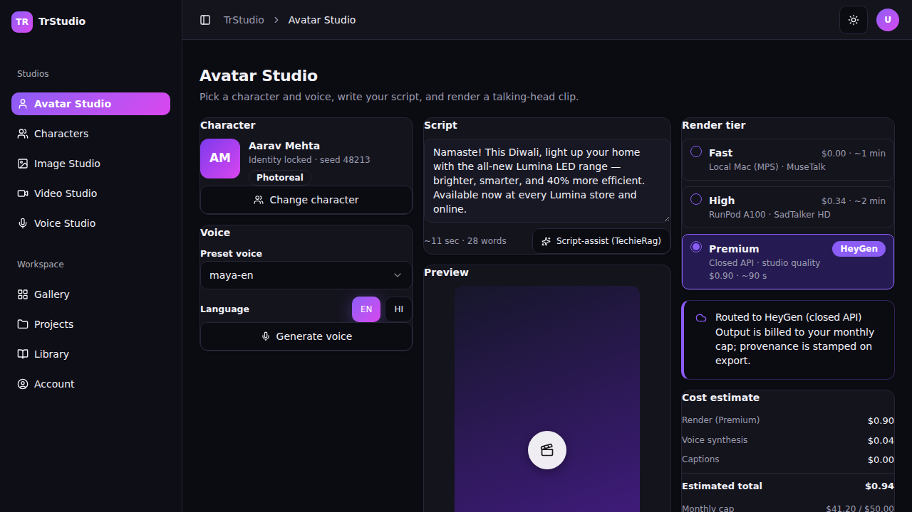
Screenshot — Creator hitting /admin/* → AccessDenied
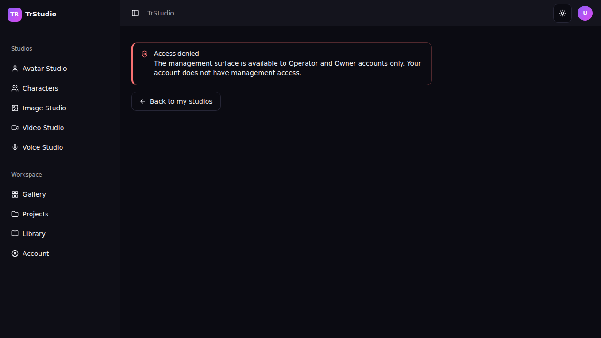
The desktop head (MAUI Blazor Hybrid) shows the same in-window denial (docs/screenshots/TrStudio/creator-desktop-denied.png, from .smoke/desktop/shots/creator-denied.png).
Auth wiring after the consolidation (path citations). The auth contracts stay in the shared RCL — IAuthSession (src/TrStudioUI/Auth/IAuthSession.cs) + AuthSessionState (src/TrStudioUI/Auth/AuthSessionState.cs) — but the Blazor-Server auth implementations moved OUT of the RCL into the web host: AuthSession, AuthTokenHandler, CircuitServicesAccessor, ServicesAccessorCircuitHandler, AuthServiceCollectionExtensions now live under src/TrStudio/Auth/ (e.g. src/TrStudio/Auth/AuthSession.cs:13, namespace still TrStudioUI.Auth). The desktop head supplies its own SecureStorage-backed implementation src/TrStudio.Desktop/Auth/MauiAuthSession.cs + MauiAuthTokenHandler.cs. So every Creator screen's IAuthSession.* call binds to the RCL contract, resolved at runtime to the web AuthSession or the desktop MauiAuthSession depending on the head (REQ-NFR-003).
Screen-by-screen code map#
Creator · Sign in#
- Route:
/login - Razor file:
src/TrStudioUI/Pages/Auth/Login.razor(single-file,@codeinline) - Reached via: app entry / auth redirect; not in sidebar. Log in as: n/a (this IS the login)
- What this screen does: Email/password sign-in on the bare EmptyLayout; posts to the AppManager-backed auth API and routes to the setup-gate-aware role landing.
- Visual status: ✅ VISUAL-OK (runtime-confirmed 2026-07-04)
Screenshot
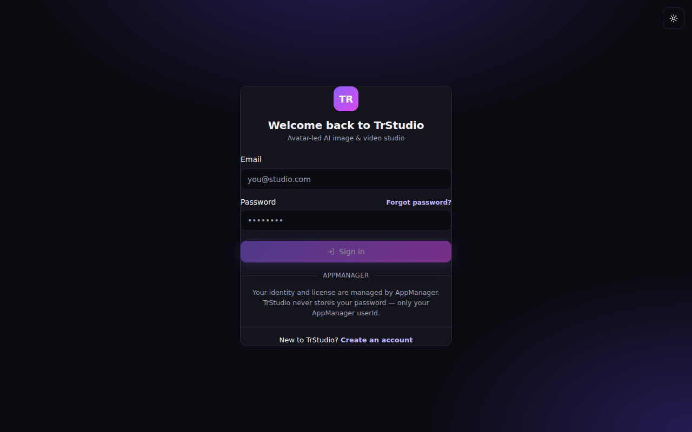
Screen flowchart
flowchart TD
P["Login.razor"] --> C1["Sign in Button (HandleSignInAsync)"]
C1 --> S1["HttpClient POST ApiRoutes.Auth + /login"]
S1 --> E1["IdentityEndpoints.LoginAsync (/api/v1/auth/login)"]
E1 --> SV1["IAppManagerClient.LoginAsync"]
E1 --> SV2["ISetupGateService.EvaluateAsync"]
SV1 --> EX1[("AppManager (external identity)")]
SV2 --> DB1[("ModelSource + RegistryModel (setup gate)")]
(Mermaid rules: quote EVERY label; never use end as a node id.)
Controls on this screen
| Control | Type | Purpose | Populated / calculated by |
|---|---|---|---|
| Email input | Input | Capture email | Two-way bind objEmail; IsEmailValid (Login.razor:99-102) |
| Password input | Input | Capture password | Bind objPassword; IsPasswordValid (Login.razor:105) |
| Sign in button | Button | Submit login | HandleSignInAsync; disabled until IsFormValid (Login.razor:68-69,108) |
| Error alert | Alert | Show auth failure | objError from ReadErrorAsync (Login.razor:25-33,169) |
| Forgot-password link | <a> | Nav to /forgot-password | Static href (Login.razor:55) |
| Create-account link | <a> | Nav to /register | Static href (Login.razor:88) |
Data lineage
| Control / Action | Razor (file:line) | Client/Service method (file) | API endpoint (file) | Engine service → repository (file) | Table / SQL query | Render status | Notes |
|---|---|---|---|---|---|---|---|
| Sign in | Login.razor:111-150 | HttpClientFactory client "TrStudioApi" PostAsJsonAsync(ApiRoutes.Auth + "/login") (Login.razor:123-125) | IdentityEndpoints.LoginAsync POST /api/v1/auth/login AllowAnonymous (IdentityEndpoints.cs:31,47) | IAppManagerClient.LoginAsync + ISetupGateService.EvaluateAsync (IdentityEndpoints.cs:60-61) | External AppManager; setup gate reads "ModelSource" + "RegistryModel" | renders | Real login is Blocked externally (AppManager app 4 not published) — smokes use /dev/session seam |
| Landing redirect | Login.razor:136,153-166 | NavigateTo(ResolveLanding) | — | LoginResponse.DefaultLandingPath set by ApplySetupGateAsync (IdentityEndpoints.cs:313-322) | — | renders | Creator → /avatar fallback; gate may send /setup-required |
Business rules / calculations
- Submit stays disabled until
IsFormValid(valid email syntax + non-empty password) (Login.razor:107-108). - Session persisted via
IAuthSession.SetAsyncBEFORE navigation so the next circuit carries the bearer token (Login.razor:132-134). - 401 → "Invalid email or password."; other → generic; ProblemDetails
Detailused when present (Login.razor:184-186).
Known issues / gotchas
- Real AppManager login is externally Blocked (AppManager app 4 not published) — this is an external dependency, not a screen defect. Use
/dev/sessionfor end-to-end smokes.
Creator · Create account#
- Route:
/register - Razor file:
src/TrStudioUI/Pages/Auth/Register.razor - Reached via: "Create an account" link on
/login; not in sidebar. Log in as: n/a (provisions the account) - What this screen does: Name/email/password/confirm + Creator-vs-Admin account-type selector; provisions via AppManager and routes by account type.
- Visual status: ✅ VISUAL-OK (runtime-confirmed 2026-07-04)
Screenshot
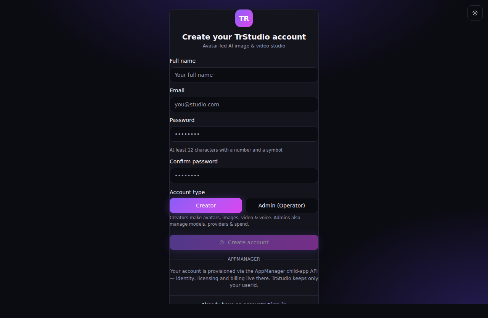
Screen flowchart
flowchart TD
P["Register.razor"] --> C1["Create account Button (HandleCreateAsync)"]
C1 --> S1["HttpClient POST ApiRoutes.Auth + /register"]
S1 --> E1["IdentityEndpoints.RegisterAsync (/api/v1/auth/register)"]
E1 --> SV1["IAppManagerClient.RegisterAsync"]
SV1 --> EX1[("AppManager (external identity)")]
Controls on this screen
| Control | Type | Purpose | Populated / calculated by |
|---|---|---|---|
| Name / Email / Password / Confirm | Input | Capture fields | Binds objName/objEmail/objPassword/objConfirm; validators Register.razor:139-152 |
| Account type toggle | two Buttons | Creator vs Admin | objIsAdmin (Register.razor:95-100) |
| Create account button | Button | Submit | HandleCreateAsync; disabled until IsFormValid (Register.razor:106-107,154) |
| Error alert | Alert | Duplicate/other errors | objError; EMAIL_EXISTS special-cased (Register.razor:220-223) |
Data lineage
| Control / Action | Razor (file:line) | Client/Service method (file) | API endpoint (file) | Engine service → repository (file) | Table / SQL query | Render status | Notes |
|---|---|---|---|---|---|---|---|
| Create account | Register.razor:157-202 | PostAsJsonAsync(ApiRoutes.Auth + "/register") (Register.razor:177) | IdentityEndpoints.RegisterAsync POST /api/v1/auth/register AllowAnonymous (IdentityEndpoints.cs:32,77) | IAppManagerClient.RegisterAsync (IdentityEndpoints.cs:90) | External AppManager; no local password store (BRD-57) | renders | AccountType "Creator"/"AdminOperator" (Register.razor:175) |
Business rules / calculations
- Password strength: ≥12 chars with a digit and a non-alphanumeric symbol (
Register.razor:147-150). - Confirm must equal password (
Register.razor:152). - Landing:
DefaultLandingPathif set, else Admin →/admin/setup/hardware, Creator →/avatar(Register.razor:205-213).
Known issues / gotchas
- External AppManager provisioning Blocked (app 4 not published) — external, not a screen defect.
Creator · Reset password#
- Route:
/forgot-password - Razor file:
src/TrStudioUI/Pages/Auth/ForgotPassword.razor - Reached via: "Forgot password?" link on
/login; not in sidebar. Log in as: n/a - What this screen does: Email + "Send reset link"; enumeration-safe — always shows the same generic success.
- Visual status: ✅ VISUAL-OK (runtime-confirmed 2026-07-04)
Screenshot
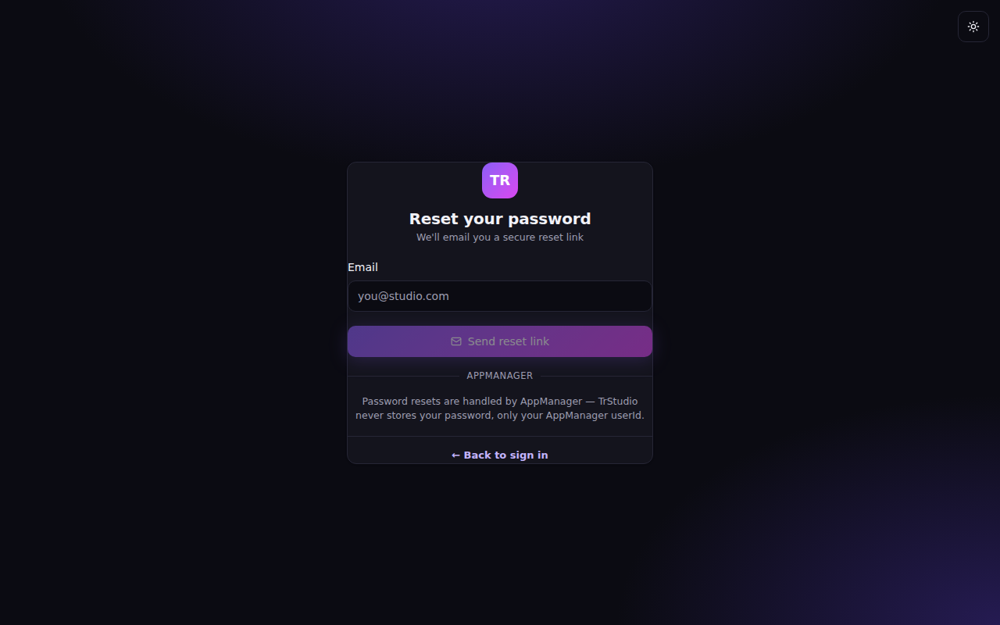
Screen flowchart
flowchart TD
P["ForgotPassword.razor"] --> C1["Send reset link Button (HandleSendAsync)"]
C1 --> S1["HttpClient POST ApiRoutes.Auth + /forgot-password"]
S1 --> E1["IdentityEndpoints.ForgotPasswordAsync (/api/v1/auth/forgot-password)"]
E1 --> SV1["IAppManagerClient.RequestPasswordResetAsync"]
SV1 --> EX1[("AppManager (external identity)")]
Controls on this screen
| Control | Type | Purpose | Populated / calculated by |
|---|---|---|---|
| Email input | Input | Capture email | Bind objEmail; IsEmailValid (ForgotPassword.razor:77-80) |
| Send button | Button | Request reset | HandleSendAsync; disabled until valid email (ForgotPassword.razor:35-36) |
| Success alert | Alert | Generic confirmation | objSent — always shown on completion (ForgotPassword.razor:49-60,105) |
Data lineage
| Control / Action | Razor (file:line) | Client/Service method (file) | API endpoint (file) | Engine service → repository (file) | Table / SQL query | Render status | Notes |
|---|---|---|---|---|---|---|---|
| Send reset link | ForgotPassword.razor:83-107 | PostAsJsonAsync(ApiRoutes.Auth + "/forgot-password") (ForgotPassword.razor:96) | IdentityEndpoints.ForgotPasswordAsync POST /api/v1/auth/forgot-password AllowAnonymous (IdentityEndpoints.cs:34,134) | IAppManagerClient.RequestPasswordResetAsync (IdentityEndpoints.cs:146) | External AppManager | renders | All transport/account errors swallowed to prevent enumeration (ForgotPassword.razor:98-101) |
Business rules / calculations
objSentis set infinallyregardless of outcome — the success alert is enumeration-safe (ForgotPassword.razor:103-106).
Known issues / gotchas
- None confirmed.
Creator · Setup required#
- Route:
/setup-required - Razor file:
src/TrStudioUI/Pages/Auth/SetupRequired.razor - Reached via: setup-gate redirect after login when no model/source is ready (BRD-85); not in sidebar. Log in as: user 2 (creator@trstudio.test)
- What this screen does: First-run gate shown to creators when the install has no ready model; "Check again" re-evaluates the gate and forwards to the studio when setup completes.
- Visual status: ✅ VISUAL-OK (runtime-confirmed 2026-07-04)
Screenshot
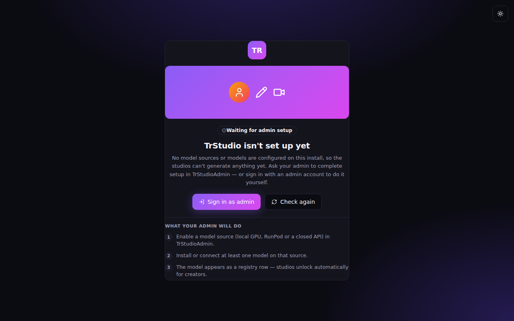
Screen flowchart
flowchart TD
P["SetupRequired.razor"] --> C1["Check again Button (CheckAgainAsync)"]
C1 --> S1["HttpClient GET ApiRoutes.SetupGate"]
S1 --> E1["IdentityEndpoints.GetSetupGateAsync (/api/v1/setup-gate)"]
E1 --> SV1["ISetupGateService.EvaluateAsync"]
SV1 --> DB1[("ModelSource (enabled) + RegistryModel (ready)")]
P --> C2["Sign in as admin Button (Href /login)"]
Controls on this screen
| Control | Type | Purpose | Populated / calculated by |
|---|---|---|---|
| Sign in as admin | Button Href="/login" | Route to login | Static href (SetupRequired.razor:37) |
| Check again | Button | Re-evaluate gate | CheckAgainAsync (SetupRequired.razor:41-53,77) |
| Waiting badge / steps | Badge/static | Explain gate | Static markup (SetupRequired.razor:25-70) |
Data lineage
| Control / Action | Razor (file:line) | Client/Service method (file) | API endpoint (file) | Engine service → repository (file) | Table / SQL query | Render status | Notes |
|---|---|---|---|---|---|---|---|
| Check again | SetupRequired.razor:77-105 | GetAsync(ApiRoutes.SetupGate) (SetupRequired.razor:83) | IdentityEndpoints.GetSetupGateAsync GET /api/v1/setup-gate RequireAuthorization (IdentityEndpoints.cs:38,194) | ISetupGateService.EvaluateAsync (IdentityEndpoints.cs:203) | Reads "ModelSource" (enabled) + "RegistryModel" (ready); defined 0301_ModelSource.sql, 0200_RegistryTables.sql | renders | On SetupComplete navigates to RedirectPath (forceLoad:true), else toast (SetupRequired.razor:87-95) |
Business rules / calculations
- Gate complete ⇔ ≥1 enabled model source AND ≥1 ready registry model (
IdentityEndpoints.cs:191-193remark).
Known issues / gotchas
- None confirmed. "Check again" requires an authenticated session (endpoint is
RequireAuthorization).
Creator · Home#
- Route:
/(Home) - Razor file:
src/TrStudioUI/Pages/Home.razor - Reached via: app shell root; renders inside sidebar layout. Log in as: user 2 (creator@trstudio.test)
- What this screen does: Shared landing stub — a primary CTA plus launch cards for every nav group/item.
- Visual status: ✅ VISUAL-OK (runtime-confirmed 2026-07-04)
Screenshot
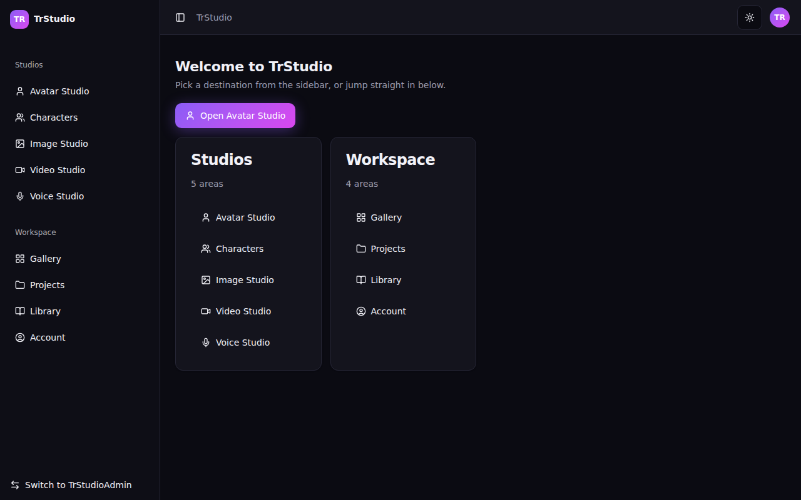
Screen flowchart
flowchart TD P["Home.razor"] --> C1["Primary Button (objPrimaryItem.Href)"] P --> C2["Per-group launch cards (NavConfig.Groups)"] C2 --> N1["Nav Buttons -> item.Href"]
Controls on this screen
| Control | Type | Purpose | Populated / calculated by |
|---|---|---|---|
| Primary launch button | Button | Jump to first nav item | objPrimaryItem = first group's first item (Home.razor:14-20,49-52) |
| Group cards | Card grid | List nav items | NavConfig.Groups (DI-injected) (Home.razor:22-43) |
Data lineage
| Control / Action | Razor (file:line) | Client/Service method (file) | API endpoint (file) | Engine service → repository (file) | Table / SQL query | Render status | Notes |
|---|---|---|---|---|---|---|---|
| Nav cards | Home.razor:23-42 | AppNavigationConfig (DI, in-proc) | — | TrStudioNavSets.CreateCreatorNavigation (TrStudioNavSets.cs:15) | none (in-memory nav) | renders | Pure client render; no API/DB |
Business rules / calculations
objPrimaryItem=NavConfig.Groups.FirstOrDefault()?.Items.FirstOrDefault()→ Avatar Studio for Creator (Home.razor:51).
Known issues / gotchas
- None. Static shell; no data hop.
Creator · Avatar Studio (flagship)#
- Route:
/avatar - Razor file:
src/TrStudioUI/Pages/Avatar/AvatarStudio.razor - Reached via: Studios → Avatar Studio; also the Creator post-login landing. Log in as: user 2 (creator@trstudio.test)
- What this screen does: Three-column talking-head studio: character picker (enrich-or-seed), preset-voice + EN/HI toggle, script editor with TechieRag assist, Fast/High/Premium tier with cost/cap estimate + safety alerts, captions + aspect + Export MP4. Render rides the shared job spine.
- Visual status: ✅ VISUAL-OK (runtime-confirmed 2026-07-04)
Screenshot
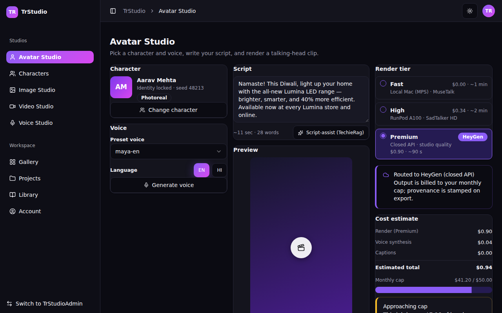
Screen flowchart
flowchart TD
P["AvatarStudio.razor"] --> C1["Character picker (TryEnrichCharactersAsync)"]
C1 --> S1["HttpClient GET /api/v1/characters"]
S1 --> E1["CharacterEndpoints.ListCharactersAsync"]
E1 --> SV1["ICharacterService.ListAsync"]
SV1 --> R1["CharacterRepository"]
R1 --> DB1[("Character (1100_Characters.sql)")]
P --> C2["Render Button (RenderAsync -> TrySubmitRenderAsync)"]
C2 --> S2["HttpClient POST ApiRoutes.Jobs"]
S2 --> E2["SpineEndpoints.SubmitJobAsync (/api/v1/jobs)"]
E2 --> SV2["IJobOrchestrator.SubmitAsync"]
SV2 --> R2["JobRepository"]
R2 --> DB2[("GenerationJob / GeneratedAsset (0100_SpineTables.sql)")]
P --> C3["Generate voice (GenerateVoiceAsync)"]
C3 --> S3["HttpClient POST ApiRoutes.Voice ROOT"]
S3 --> X3["no route at /api/v1/voice root -> 404 (DEFECT)"]
P --> C4["Script-assist (ScriptAssistAsync)"]
C4 --> S4["HttpClient POST /api/v1/rag/script-assist"]
S4 --> X4["no script-assist route -> 404 (DEFECT)"]
Controls on this screen
| Control | Type | Purpose | Populated / calculated by |
|---|---|---|---|
| Character card | seed/enrich | Show identity-locked character | objCharacters seed (AvatarStudio.razor:559), enriched from /api/v1/characters (AvatarStudio.razor:390-414) |
| Change / New character | Button | Nav to /avatar/characters | GoToCharacters (AvatarStudio.razor:417) |
| Voice select | Select | Pick preset voice | Hardcoded objVoices dict (AvatarStudio.razor:291-297) — NOT API-loaded |
| Language toggle | Buttons | EN/HI | objLanguage (AvatarStudio.razor:300-301) |
| Generate voice | Button | Voice preview | GenerateVoiceAsync (AvatarStudio.razor:420-433) — see defect |
| Script textarea | Textarea | Narration text | Bind objScript; WordCount/EstimatedSeconds computed (AvatarStudio.razor:344-348) |
| Script-assist | Button | TechieRag tighten hook | ScriptAssistAsync (AvatarStudio.razor:436-449) — see defect |
| Render tier | RadioGroup | Fast/High/Premium | objTiers seed (AvatarStudio.razor:311-316); HeyGen badge/routing alert computed |
| Cost estimate | computed | Render+voice vs cap | EstimatedTotal, OverCap, NearCap, CapPercent (AvatarStudio.razor:350-363) |
| Render | Button | Submit lip-sync job | RenderAsync → TrySubmitRenderAsync (AvatarStudio.razor:456-545) |
| Safety alert | Alert | SAFE-01..06 block | objSafetyBlocked set when job returns Blocked (AvatarStudio.razor:482-485,531) |
| Captions switch / Aspect / Export | Switch/Select/Button | Export options | objCaptions,objAspect; ExportAsync toast only (AvatarStudio.razor:548-554) |
Data lineage
| Control / Action | Razor (file:line) | Client/Service method (file) | API endpoint (file) | Engine service → repository (file) | Table / SQL query | Render status | Notes |
|---|---|---|---|---|---|---|---|
| Character list | AvatarStudio.razor:390-414 | GetFromJsonAsync<List<CharacterSummary>>("/api/v1/characters") | CharacterEndpoints.ListCharactersAsync GET /api/v1/characters (CharacterEndpoints.cs:25,62) | ICharacterService.ListAsync → CharacterRepository | "Character" (1100_Characters.sql) | renders (seed; live enrich when session+rows) | Enrich-or-seed; seed always shows |
| Render job | AvatarStudio.razor:494-545 | PostAsJsonAsync(ApiRoutes.Jobs) then poll GET /api/v1/jobs/{id} | SpineEndpoints.SubmitJobAsync POST /api/v1/jobs (SpineEndpoints.cs:44,65) | IJobOrchestrator.SubmitAsync → JobRepository; safety/cost pre-checks (SpineEndpoints.cs:79,82,96) | "GenerationJob"/"GeneratedAsset" (0100_SpineTables.sql) | renders (progress animates; live submit best-effort) | Blocked → 403 SAFETY_BLOCKED surfaces safety alert |
| Generate voice | AvatarStudio.razor:420-433 | PostAsJsonAsync(ApiRoutes.Voice, …) → /api/v1/voice (root) | no POST at /api/v1/voice root — synth is /api/v1/voice/synthesize (VoiceEndpoints.cs:28) | — | — | renders-empty (suspected defect — wrong route, always 404, swallowed) | Toast still fires; real synth never runs. DEFECT |
| Script-assist | AvatarStudio.razor:436-449 | PostAsJsonAsync("/api/v1/rag/script-assist", …) | no script-assist route — RAG maps script/captions/usage (RagEndpoints.cs:25-27) | — | — | renders-empty (suspected defect — 404, swallowed) | Toast still fires. DEFECT |
Business rules / calculations
EstimatedTotal = SelectedTier.Cost + VoiceCost(captions free) (AvatarStudio.razor:351).OverCapdisables Render;NearCapwarns under $10 headroom (AvatarStudio.razor:357-360,242).- Job
ModelIdchosen by tier:heygen-avatarvsmusetalk-local(AvatarStudio.razor:501);Task=LipSync.
Known issues / gotchas
- Voice-preview and script-assist calls hit non-existent routes (see lineage) — both are swallowed try/catch, so the studio still demos via toasts, but the backend is never exercised. REQ-UI-010 / REQ-FN-031 / RAG-001 wiring.
- Voice
Selectin this studio is a hardcoded 4-item dict, never enriched from the voice catalog (by design seed, but note it will not reflect installed voices). - Provider/tier costs are seed constants, not the live registry — model-gated by design.
Creator · Character Library#
- Route:
/avatar/characters - Razor file:
src/TrStudioUI/Pages/Avatar/CharacterLibrary.razor - Reached via: Studios → Characters (or Avatar Studio "Change/New character"). Log in as: user 2 (creator@trstudio.test)
- What this screen does: Grid of identity-locked characters (enrich-or-seed) with search, a create/edit Dialog (prompt + realism + seed/LoRA lock), and a per-character bible Sheet.
- Visual status: ✅ VISUAL-OK (runtime-confirmed 2026-07-04)
Screenshot
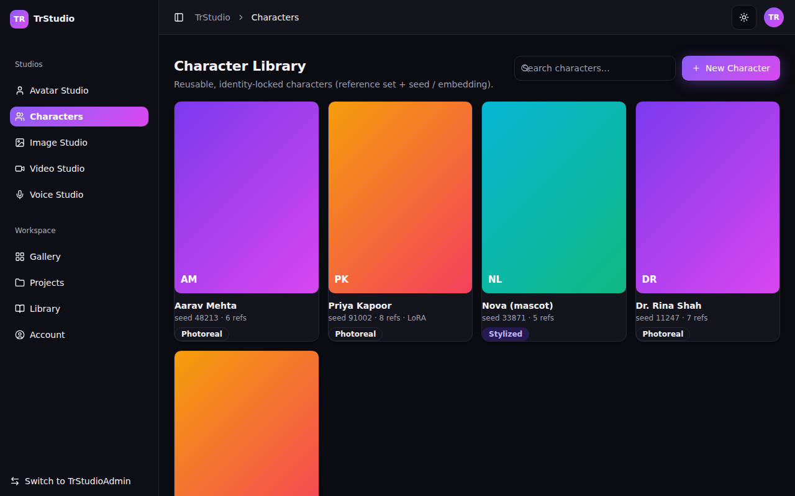
Screen flowchart
flowchart TD
P["CharacterLibrary.razor"] --> C1["Grid (TryEnrichCharactersAsync)"]
C1 --> S1["HttpClient GET /api/v1/characters"]
S1 --> E1["CharacterEndpoints.ListCharactersAsync"]
E1 --> SV1["ICharacterService.ListAsync"]
SV1 --> R1["CharacterRepository"]
R1 --> DB1[("Character (1100_Characters.sql)")]
P --> C2["Create character (SaveCharacterAsync)"]
C2 --> S2["HttpClient POST /api/v1/characters"]
S2 --> E2["CharacterEndpoints.CreateCharacterAsync"]
E2 --> SV2["ICharacterService.CreateAsync"]
SV2 --> R1
Controls on this screen
| Control | Type | Purpose | Populated / calculated by |
|---|---|---|---|
| Search box | Input | Filter grid | objSearch → FilteredCharacters (CharacterLibrary.razor:207-212) |
| Character card | Card | Show character | objCharacters seed/enriched (CharacterLibrary.razor:337,235-255) |
| New Character dialog | Dialog | Create form | objDraftPrompt/Realism/Seed/Lora (CharacterLibrary.razor:201-204) |
| Create button | Button | Persist character | SaveCharacterAsync (CharacterLibrary.razor:280-325) |
| Bible sheet | Sheet | Persona notes | objBibleChar (static persona copy) (CharacterLibrary.razor:149-185) |
Data lineage
| Control / Action | Razor (file:line) | Client/Service method (file) | API endpoint (file) | Engine service → repository (file) | Table / SQL query | Render status | Notes |
|---|---|---|---|---|---|---|---|
| Load grid | CharacterLibrary.razor:235-255 | GetFromJsonAsync<List<CharacterCard>>("/api/v1/characters") | CharacterEndpoints.ListCharactersAsync (CharacterEndpoints.cs:62) | ICharacterService.ListAsync → CharacterRepository | "Character" (1100_Characters.sql) | renders (seed + live enrich) | 5-item seed always shows |
| Create character | CharacterLibrary.razor:280-325 | PostAsJsonAsync("/api/v1/characters", { name, description, realism, seed, loraRef, isAdult }) (CharacterLibrary.razor:307-315) | CharacterEndpoints.CreateCharacterAsync POST /api/v1/characters (CharacterEndpoints.cs:24,38) | ICharacterService.CreateAsync → CharacterRepository | "Character" | renders (optimistic prepend; live POST best-effort) | Body maps to CharacterUpsertRequest; realism numeric enum |
| Bible sheet | CharacterLibrary.razor:155-177 | none (static copy) | (CharacterEndpoints has /{id}/bible but the sheet does not call it) | — | — | renders-empty (static; no bible fetch) | Sheet shows canned persona text, not ListBibleEntriesAsync data — cosmetic, not wired |
Business rules / calculations
- Seed parsed from field or randomized 10000–99999 (
CharacterLibrary.razor:288);HasLorawhen LoRA ≠ "None". - Name derived from first 3 prompt words (
CharacterLibrary.razor:329-334).
Known issues / gotchas
- The bible Sheet renders static persona copy and never calls
GET /api/v1/characters/{id}/bible(CharacterEndpoints.cs:31). Not a broken route — the feature is simply not wired to the API. REQ-UI-011 / RAG-004.
Creator · Image Studio#
- Route:
/image - Razor file:
src/TrStudioUI/Pages/Image/ImageStudio.razor - Reached via: Studios → Image Studio. Log in as: user 2 (creator@trstudio.test)
- What this screen does: Registry-schema-driven param panel (controls render from the selected model's
Paramsschema), canvas + prompt, ControlNet tabs + upload, results strip with per-seed badges, upscale + export. Generation rides the shared spine. - Visual status: ✅ VISUAL-OK (runtime-confirmed 2026-07-04)
Screenshot
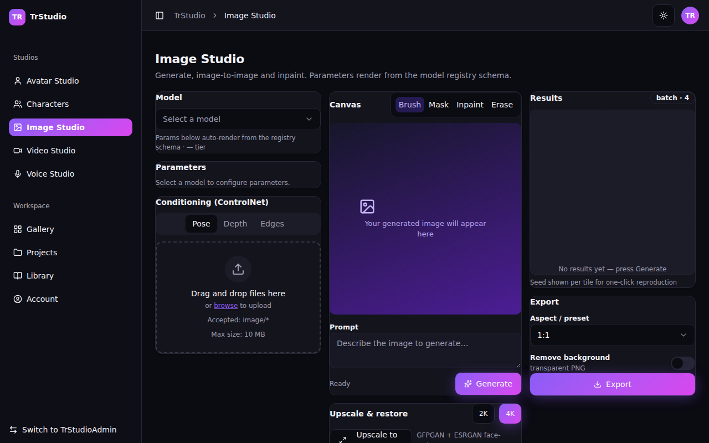
Screen flowchart
flowchart TD
P["ImageStudio.razor"] --> C1["Model select (TryLoadModelsAsync)"]
C1 --> S1["HttpClient GET ApiRoutes.Models"]
S1 --> E1["RegistryEndpoints.ListModelsAsync (/api/v1/models)"]
E1 --> SV1["IModelCatalogService.ListVisibleAsync"]
SV1 --> R1["RegistryRepository.ListAsync(enabledOnly)"]
R1 --> DB1[("RegistryModel (0200_RegistryTables.sql)")]
P --> C2["Generate (GenerateAsync -> TrySubmitJobAsync)"]
C2 --> S2["HttpClient POST ApiRoutes.Jobs + poll + /result"]
S2 --> E2["SpineEndpoints.SubmitJobAsync / GetJobResultAsync"]
E2 --> SV2["IJobOrchestrator.SubmitAsync / GetResultAsync"]
SV2 --> R2["JobRepository / AssetRepository"]
R2 --> DB2[("GenerationJob / GeneratedAsset (0100_SpineTables.sql)")]
Controls on this screen
| Control | Type | Purpose | Populated / calculated by |
|---|---|---|---|
| Model select | Select | Choose registry model | objModels from /api/v1/models (ImageStudio.razor:337-364) |
| Dynamic params | Slider/Switch/Select/Input | Render from schema | SelectedModel.Params switch on Type (ImageStudio.razor:53-98); values in objNumeric/objText/objBool |
| ControlNet tabs + upload | Tabs/FileUpload | Conditioning | objControlTabs (ImageStudio.razor:104-115) |
| Prompt | Textarea | Prompt text | PromptText mirrors objText["prompt"] (ImageStudio.razor:303-307) |
| Generate | Button | Submit job | GenerateAsync (ImageStudio.razor:411-446) |
| Results strip | tiles | Per-seed results | objResults from assets or representative seeds (ImageStudio.razor:433-441) |
| Upscale / Export | Button | Post-steps | UpscaleAsync/ExportAsync toast only (ImageStudio.razor:525-537) |
Data lineage
| Control / Action | Razor (file:line) | Client/Service method (file) | API endpoint (file) | Engine service → repository (file) | Table / SQL query | Render status | Notes |
|---|---|---|---|---|---|---|---|
| Model catalog | ImageStudio.razor:337-364 | GetFromJsonAsync<List<RegistryModel>>(ApiRoutes.Models) | RegistryEndpoints.ListModelsAsync GET /api/v1/models (RegistryEndpoints.cs:32,62) | IModelCatalogService.ListVisibleAsync → RegistryRepository.ListAsync (ModelCatalogService.cs:28, RegistryRepository.cs:46) | SELECT … FROM "RegistryModel" (RegistryRepository.cs:48; 0200_RegistryTables.sql) | renders (empty when no session; fallback catalog only when authed+zero rows) | Param panel is fully schema-driven — no per-model code |
| Generate | ImageStudio.razor:449-501 | PostAsJsonAsync(ApiRoutes.Jobs), poll GET /api/v1/jobs/{id}, GET /api/v1/jobs/{id}/result | SpineEndpoints.SubmitJobAsync/GetJobResultAsync (SpineEndpoints.cs:44,47) | IJobOrchestrator.SubmitAsync/GetResultAsync → JobRepository/AssetRepository | "GenerationJob"/"GeneratedAsset" (0100_SpineTables.sql) | renders (representative seeds when offline) | Task/Tier taken from selected model |
Business rules / calculations
IsSidePanelParamhidesprompt,image/mask,controlTypefrom the left panel (ImageStudio.razor:405-408).RebuildParamValuesseeds each control from schemaDefaultValue/Min(ImageStudio.razor:376-402).BuildParamsJsonserializes all dynamic values into the job (ImageStudio.razor:504-523).
Known issues / gotchas
- With no session the catalog is intentionally empty (no fallback flash); the representative fallback only appears on an authenticated call that returns zero models (
ImageStudio.razor:337-364). Correct-by-design, model-gated.
Creator · Voice Studio#
- Route:
/voice - Razor file:
src/TrStudioUI/Pages/Voice/VoiceStudio.razor - Reached via: Studios → Voice Studio. Log in as: user 2 (creator@trstudio.test)
- What this screen does: Narration composer — language + preset-voice combobox (routing hidden), emotion/speed gates by voice capability, waveform player, consent-gated clone dialog (SAFE-02/03). Enrich-or-seed preset list.
- Visual status: ✅ VISUAL-OK (runtime-confirmed 2026-07-04)
Screenshot
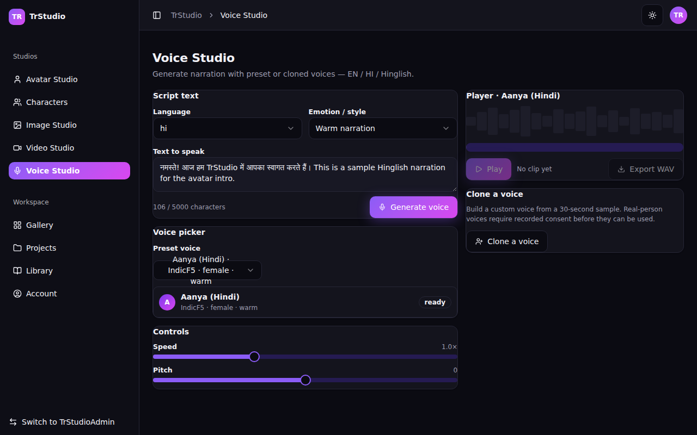
Screen flowchart
flowchart TD P["VoiceStudio.razor"] --> C1["Preset combobox (TryEnrichVoicesAsync)"] C1 --> S1["HttpClient GET /api/v1/voice/presets"] S1 --> X1["server route is /api/v1/voice/preset-voices -> 404 (DEFECT)"] P --> C2["Generate voice (GenerateAsync -> TrySynthesizeAsync)"] C2 --> S2["HttpClient POST /api/v1/voice ROOT"] S2 --> X2["synth route is /api/v1/voice/synthesize -> 404 (DEFECT)"] P --> C3["Create clone (CreateCloneAsync)"] C3 --> S3["HttpClient POST /api/v1/voice/clone"] S3 --> E3["VoiceEndpoints.CloneVoiceAsync"] E3 --> SV3["IVoiceCloneService.RequestCloneAsync"]
Controls on this screen
| Control | Type | Purpose | Populated / calculated by |
|---|---|---|---|
| Language select | Select | EN/HI/Hinglish | objLanguages (VoiceStudio.razor:277-282) |
| Emotion select | Select | Style | objEmotions; disabled when !EmotionSupported (VoiceStudio.razor:318) |
| Script textarea | Textarea | Text to speak | Bind objScript, 5000-char counter |
| Preset voice combobox | Combobox | Pick voice | objVoices seed, enriched (VoiceStudio.razor:350-374) |
| Speed/Pitch sliders | Slider | Controls | objSpeed gated by SpeedSupported; objPitch (VoiceStudio.razor:321) |
| Generate voice | Button | Synthesize | GenerateAsync → TrySynthesizeAsync (VoiceStudio.razor:393-458) — see defect |
| Player / model-missing alert | waveform/Alert | Playback / gate | objHasAudio; ModelInstalled gate (VoiceStudio.razor:156-191) |
| Clone dialog + consent gate | Dialog/AlertDialog | Consent-gated clone | objCloneSynthetic, objConsentOpen (VoiceStudio.razor:474-497) |
Data lineage
| Control / Action | Razor (file:line) | Client/Service method (file) | API endpoint (file) | Engine service → repository (file) | Table / SQL query | Render status | Notes |
|---|---|---|---|---|---|---|---|
| Preset list | VoiceStudio.razor:350-374 | GetFromJsonAsync<List<PresetVoice>>("/api/v1/voice/presets") (VoiceStudio.razor:360) | route is /api/v1/voice/preset-voices (VoiceEndpoints.cs:27) — /presets 404s | IPresetVoiceCatalog.GetAll (VoiceEndpoints.cs:41) never reached | in-memory catalog | renders-empty (suspected defect — wrong path, always seed) | Also DTO shape differs (Id/Name vs VoiceId/DisplayName). DEFECT |
| Generate voice | VoiceStudio.razor:437-458 | PostAsJsonAsync(VoiceApiRoute, …) → /api/v1/voice root (VoiceStudio.razor:452) | synth route is /api/v1/voice/synthesize (VoiceEndpoints.cs:28) — root 404s | IVoiceSynthesizer.SynthesizeAsync never reached | — | renders-empty (suspected defect — swallowed 404) | Placeholder waveform stands in. DEFECT |
| Create clone | VoiceStudio.razor:500-526 | PostAsJsonAsync("/api/v1/voice/clone", …) (VoiceStudio.razor:512) | VoiceEndpoints.CloneVoiceAsync POST /api/v1/voice/clone (VoiceEndpoints.cs:30,86) | IVoiceCloneService.RequestCloneAsync (VoiceEndpoints.cs:98) | consent tables (0900_Safety.sql/0800_Voice.sql) | renders (route correct; best-effort) | Real-person path gated by consent AlertDialog first (client-side SAFE-02/03) |
Business rules / calculations
EmotionSupported/SpeedSupportedgate the emotion select + speed slider by the voice's capability flags (VoiceStudio.razor:318-321).- Clone: synthetic proceeds immediately; real-person routed through the consent AlertDialog before
CreateCloneAsync(VoiceStudio.razor:474-497). - Generate blocks up front when
!ModelInstalled(VoiceStudio.razor:402-406).
Known issues / gotchas
- Preset-voice list route mismatch (
/presetsvs/preset-voices) and synthesize route mismatch (root vs/synthesize) — both swallowed, so the studio demos on the seed voices and placeholder audio, but no live voice call ever lands. REQ-UI-030 / REQ-FN-031/033.
Creator · Video Studio#
- Route:
/video - Razor file:
src/TrStudioUI/Pages/Video/VideoStudio.razor - Reached via: Studios → Video Studio. Log in as: user 2 (creator@trstudio.test)
- What this screen does: I2V/T2V mode tabs swap conditioning; duration/motion/aspect controls; Fast/High/Premium tier; timeline/editor with a trim/join/reframe/add-audio/split toolbar; post-processing + export. Generation rides the spine.
- Visual status: ✅ VISUAL-OK (runtime-confirmed 2026-07-04)
Screenshot
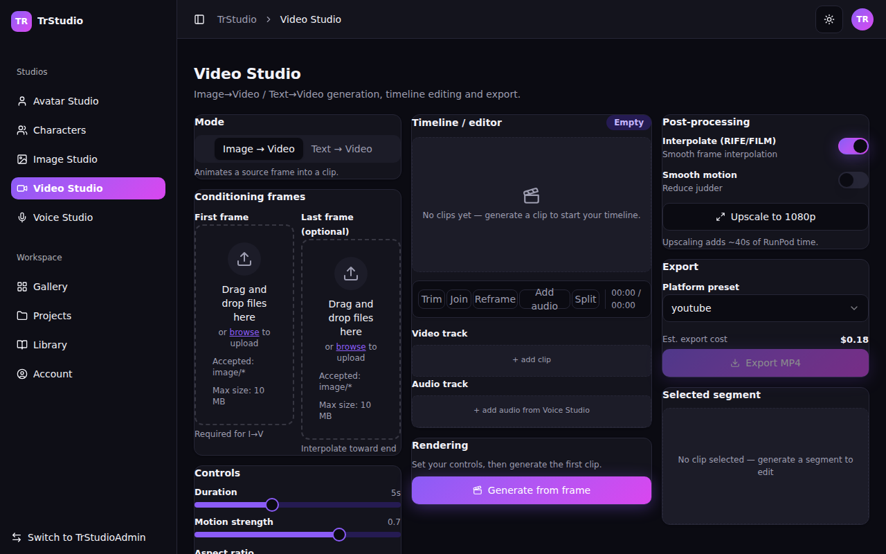
Screen flowchart
flowchart TD
P["VideoStudio.razor"] --> C1["Generate (GenerateAsync -> TrySubmitJobAsync)"]
C1 --> S1["HttpClient POST ApiRoutes.Jobs + poll"]
S1 --> E1["SpineEndpoints.SubmitJobAsync (/api/v1/jobs)"]
E1 --> SV1["IJobOrchestrator.SubmitAsync"]
SV1 --> R1["JobRepository"]
R1 --> DB1[("GenerationJob / GeneratedAsset (0100_SpineTables.sql)")]
P --> C2["Timeline edit (EditAsync)"]
C2 --> S2["HttpClient POST ApiRoutes.Avatar + /edit"]
S2 --> X2["edit route is /api/v1/video/edit -> avatar/edit 404 (DEFECT)"]
P --> C3["Upscale (UpscaleAsync)"]
C3 --> S3["HttpClient POST ApiRoutes.Jobs (Upscale task)"]
S3 --> E1
Controls on this screen
| Control | Type | Purpose | Populated / calculated by |
|---|---|---|---|
| Mode tabs | Tabs | I2V / T2V | objMode; IsImageToVideo (VideoStudio.razor:36-41,378) |
| Frame uploads / prompt | FileUpload/Textarea | Conditioning | objFirstFrame/objLastFrame or objPrompt (VideoStudio.razor:46-75) |
| Duration/Motion/Aspect | Slider/Select | Controls | objDuration,objMotion,objAspect |
| Quality tier | RadioGroup | Fast/High/Premium | objTiers seed (VideoStudio.razor:346-352); routing alert computed |
| Generate | Button | Submit job | GenerateAsync (VideoStudio.razor:433-465) |
| Timeline toolbar | Toolbar | Trim/Join/… | EditAsync per tool (VideoStudio.razor:525-543) — see defect |
| Post-processing / export | Switch/Button | Interp/upscale/export | UpscaleAsync/ExportAsync (VideoStudio.razor:546-573) |
Data lineage
| Control / Action | Razor (file:line) | Client/Service method (file) | API endpoint (file) | Engine service → repository (file) | Table / SQL query | Render status | Notes |
|---|---|---|---|---|---|---|---|
| Generate clip | VideoStudio.razor:468-521 | PostAsJsonAsync(ApiRoutes.Jobs) + poll (VideoStudio.razor:492) | SpineEndpoints.SubmitJobAsync POST /api/v1/jobs (SpineEndpoints.cs:44,65) | IJobOrchestrator.SubmitAsync → JobRepository | "GenerationJob"/"GeneratedAsset" (0100_SpineTables.sql) | renders (representative clip when offline) | Task=ImageToVideo/TextToVideo; Blocked → safety toast |
| Upscale | VideoStudio.razor:546-565 | PostAsJsonAsync(ApiRoutes.Jobs, Task=Upscale) | SpineEndpoints.SubmitJobAsync | IJobOrchestrator.SubmitAsync → JobRepository | "GenerationJob" | renders (toast) | Correct route |
| Timeline edit | VideoStudio.razor:525-543 | PostAsJsonAsync($"{ApiRoutes.Avatar}/edit", …) → /api/v1/avatar/edit (VideoStudio.razor:535) | edit endpoint is /api/v1/video/edit (VideoEndpoints.cs:29); Avatar group has no /edit (AvatarEndpoints.cs:26-28) | VideoEndpoints.EditAsync never reached | — | renders-empty (suspected defect — wrong prefix, 404, swallowed) | Should be ApiRoutes.Video. DEFECT |
Business rules / calculations
ModelIdchosen by tier/mode:heygen-video/wan-video/svd-local(VideoStudio.razor:475).TimelineDurationsums clip seconds (VideoStudio.razor:385-392); "Add audio" flipsobjHasAudio.
Known issues / gotchas
- Timeline edit route mismatch — posts to
/api/v1/avatar/editinstead of/api/v1/video/edit; swallowed, so the editor toast fires but no server edit runs. REQ-UI-040 / REQ-FN-053. - First-frame required for I2V is only a caption hint — not enforced before Generate (
VideoStudio.razor:56).
Creator · Prompt Studio#
- Route:
/prompt-studio - Razor file:
src/TrStudioUI/Pages/PromptStudio/PromptStudio.razor - Reached via: Studios → Prompt Studio. Log in as: user 1 (owner) / user 2 (creator@trstudio.test)
- What this screen does: A chat screen that crafts generation prompts via a registry-configured text-chat LLM (Phase 10, F-PROMPT). Two-column split: a per-user session rail (new/resume/rename/delete) + a chat card with a registry-driven LLM picker, a reactive vision badge that gates image attach, a message thread, and per-reply prompt-use actions (Copy / Save to Library / Send to Studio). Chat runs through TechieRag direct chat-completion — no RAG/vector (ADR-013); degrades cleanly to a synthetic best-effort reply when no LLM is configured.
- Visual status: ✅ VISUAL-OK (runtime-confirmed 2026-07-07) — §4b no-overlap @1280, single-column collapse @390 (
scrollWidth==390, no overflow)
Screenshot
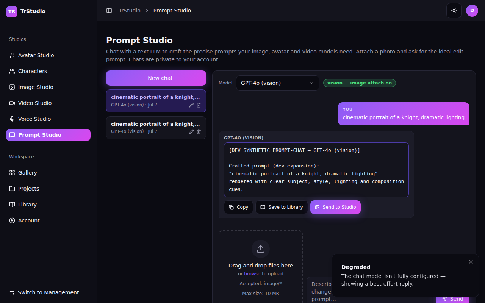
Screen flowchart
flowchart TD
P["PromptStudio.razor"] --> C1["LLM picker (TryLoadAsync)"]
C1 --> S1["HttpClient GET /api/v1/models/text-chat"]
S1 --> E1["RegistryEndpoints.ListTextChatModelsAsync"]
E1 --> SV1["IModelCatalogService.ListTextChatAsync"]
SV1 --> R1["RegistryRepository.ListAsync (Task=TextChat, enabled)"]
R1 --> DB1[("RegistryModel (0200_ + 0201_RegistryTextChatColumns.sql)")]
P --> C2["Send message (SendMessageAsync)"]
C2 --> S2["HttpClient POST /api/v1/prompt-chat/sessions/{id}/messages"]
S2 --> E2["PromptChatEndpoints.PostMessageAsync"]
E2 --> SV2["IPromptChatService.CompleteAsync (vision gate + ILlmProvider.ChatAsync + token accrual)"]
SV2 --> R2["PromptChatRepository (owner-filtered)"]
R2 --> DB2[("PromptChatSession / PromptChatMessage (0620_PromptChat.sql)")]
SV2 --> T1["ILlmTokenTracker -> SpendChannel.LlmText (BRD-56)"]
P --> C3["Save to Library (SavePresetAsync)"]
C3 --> S3["HttpClient POST /api/v1/presets (Type=prompt)"]
Controls on this screen
| Control | Type | Purpose | Populated / calculated by |
|---|---|---|---|
| New chat | Button | Start a session | StartNewChat (PromptStudio.razor:30,617) |
| Session rail | list + rename/delete | Per-user sessions | objSessions from /api/v1/prompt-chat/sessions (PromptStudio.razor:44-56,516,592) |
| LLM picker | Select | Choose text-chat model | objModels from /api/v1/models/text-chat (PromptStudio.razor:69-78,513,585) |
| Vision badge | Badge | Reflects VisionCapable of picked row | VisionOn => SelectedModel?.VisionCapable (PromptStudio.razor:80-89,544-547) |
| Attach image | FileUpload | Vision-only image attach | Disabled=@(!VisionOn), FilesChanged=OnImageSelectedAsync (PromptStudio.razor:185-187) |
| Composer + Send | Textarea/Button | Send a turn | objComposerText → SendMessageAsync (PromptStudio.razor:189-191,658) |
| Prompt block + actions | copy/save/send-to-studio | Reply + prompt-use | CopyPromptAsync / OpenSaveToLibrary→SavePresetAsync / SendToStudio (PromptStudio.razor:122-150,853,876,912) |
Data lineage
| Control / Action | Razor (file:line) | Client/Service method | API endpoint (file) | Engine service → repository (file) | Table / SQL query | Render status | Notes |
|---|---|---|---|---|---|---|---|
| LLM picker | PromptStudio.razor:571-586 | GetFromJsonAsync<List<RegistryModel>>("/api/v1/models/text-chat") | RegistryEndpoints.ListTextChatModelsAsync GET /api/v1/models/text-chat (RegistryEndpoints.cs:38,76) | IModelCatalogService.ListTextChatAsync → RegistryRepository.ListAsync (ModelCatalogService.cs:55) | "RegistryModel" Task=TextChat (0201_RegistryTextChatColumns.sql) | ✓ renders (2 dev-seed rows: gpt-4o-chat vision, llama-3-70b-chat text-only) | /api/v1/models excludes these (FN-074) |
| Sessions | PromptStudio.razor:588-593 | GET/POST/PUT/DELETE /api/v1/prompt-chat/sessions[/{id}] | PromptChatEndpoints (PromptChatEndpoints.cs:33-38) | PromptChatRepository (PromptChatRepository.cs:16-52) | "PromptChatSession" (0620_PromptChat.sql), "UserId"=@aUserId on every stmt | ✓ renders (owner-scoped; cross-user GET → 404) | BRD-81 owner filter server-side |
| Send message | PromptStudio.razor:658 | POST /api/v1/prompt-chat/sessions/{id}/messages | PromptChatEndpoints.PostMessageAsync (PromptChatEndpoints.cs:38,172) | IPromptChatService.CompleteAsync (PromptChatService.cs:79) → ILlmProvider.ChatAsync | "PromptChatMessage" (0620_PromptChat.sql) | ✓ renders (degrades to [DEV SYNTHETIC] when no LLM configured) | Vision gate: image on non-vision row → 400 (PromptChatService.cs:95-96); tokens → SpendChannel.LlmText |
| Save to Library | PromptStudio.razor:876 | POST /api/v1/presets Type=prompt | PresetEndpoints (FN-066, Verified) | IPresetService → PresetRepository | "Preset" | ✓ renders | Send-to-Studio routes /image|/avatar|/video with ?prompt= (PromptStudio.razor:912) |
Business rules / calculations
VisionOnis derived from the selected row'sVisionCapable; on model change,OnModelChangedAsyncclears any staged image when the new row is text-only (PromptStudio.razor:604-615).- The picker is fed from enabled
text-chatregistry rows only and is disjoint from the generation model catalog — a text-chat model submitted to/api/v1/jobsis rejected with HTTP 400 (JobOrchestrator, FN-074). - Post-auth-hydration load happens in
OnAfterRenderAsync→TryLoadAsync; an API-down path renders a cleanAlert(PromptStudio.razor:95,556-571).
Known issues / gotchas
- RAG-005 real-LLM completion is config-gated — with no
TechieRag:Llm:Source/no key on the picked row, the reply degrades to a[DEV SYNTHETIC PROMPT-CHAT]best-effort prompt + a "Degraded" toast (expected, like RAG-001/002). Supply an endpoint+key on a/admin/registrytext-chat row to light up the live path. - Native vision through TechieRag is blocked at 1.0.5 (TR-RAG-001) —
ChatMessage.Contentis a plain string with no image seam; the vision path uses a best-effort OpenAI-compatible multimodal HTTP POST, and non-OpenAI-compatible families degrade cleanly. Non-vision rows reject an attached image up front (BRD-90).
Creator · Gallery ("My Library")#
- Route:
/gallery - Razor file:
src/TrStudioUI/Pages/Gallery/Gallery.razor - Reached via: Workspace → Gallery. Log in as: user 2 (creator@trstudio.test)
- What this screen does: Per-user asset grid (server owner-filters), search + type/model/project filters, multi-select bulk export/compare/reproduce toolbar, detail Sheet with one-click reproduce.
- Visual status: ✅ VISUAL-OK (runtime-confirmed 2026-07-04)
Screenshot
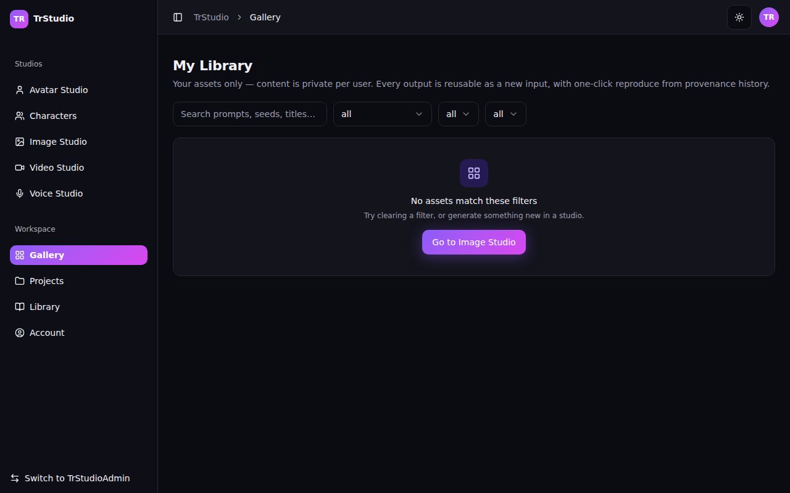
Screen flowchart
flowchart TD
P["Gallery.razor"] --> C1["Asset grid (TryLoadAssetsAsync)"]
C1 --> S1["HttpClient GET ApiRoutes.Assets ?aPageSize=100"]
S1 --> E1["WorkspaceEndpoints.ListAssetsAsync (/api/v1/assets)"]
E1 --> R1["IAssetRepository.ListAsync (owner-filtered)"]
R1 --> DB1[("GeneratedAsset (0100_SpineTables.sql)")]
P --> C2["Reproduce (TryReproduceAsync)"]
C2 --> S2["HttpClient POST ApiRoutes.GenerationLog /{jobId}/reproduce"]
S2 --> E2["SpineEndpoints.ReproduceFromLogAsync"]
E2 --> SV2["IJobOrchestrator.ReproduceAsync"]
Controls on this screen
| Control | Type | Purpose | Populated / calculated by |
|---|---|---|---|
| Filter bar | Input/Select×3 | Search + type/model/project | objSearch,objTypeFilter,ModelOptions,ProjectOptions (Gallery.razor:181-190) |
| Asset cards | Card grid | Owner assets | objAssets from /api/v1/assets (Gallery.razor:218-252); Filtered (Gallery.razor:190) |
| Select + export bar | Buttons | Bulk actions | objSelected set; count Gallery.razor:56-74 |
| Detail sheet | Sheet | Full params + reproduce | objDetail (Gallery.razor:128-157) |
| Reproduce | Button | One-click reproduce | ReproduceOne → TryReproduceAsync (Gallery.razor:306-339) |
Data lineage
| Control / Action | Razor (file:line) | Client/Service method (file) | API endpoint (file) | Engine service → repository (file) | Table / SQL query | Render status | Notes |
|---|---|---|---|---|---|---|---|
| Load assets | Gallery.razor:218-252 | GetFromJsonAsync<PagedResult<AssetResponse>>($"{ApiRoutes.Assets}?aPageSize=100") (Gallery.razor:228) | WorkspaceEndpoints.ListAssetsAsync GET /api/v1/assets (WorkspaceEndpoints.cs:31,47) | IAssetRepository.ListAsync(filter, userId) (WorkspaceEndpoints.cs:74) | SELECT … FROM "GeneratedAsset" … WHERE "UserId"=@aUserId (AssetRepository.cs:99; 0100_SpineTables.sql) | renders (empty w/o session; representative seed only on authed+zero rows) | Owner-scoped (BRD-81) |
| Reproduce | Gallery.razor:327-339 | PostAsync($"{ApiRoutes.GenerationLog}/{jobId}/reproduce") (Gallery.razor:333) | SpineEndpoints.ReproduceFromLogAsync POST /api/v1/generation-log/{id}/reproduce (SpineEndpoints.cs:52,214) | IJobOrchestrator.ReproduceAsync (SpineEndpoints.cs:228) | "GenerationLog"/"GenerationJob" (0100_SpineTables.sql) | renders (toast; best-effort) | Passes aAsset.JobId |
| Compare hand-off | Gallery.razor:316-322 | NavigateTo("/compare") | — | — | — | renders | Selection carried via /compare |
Business rules / calculations
Matchesapplies type/model/project + free-text search over title/model/seed/provenance (Gallery.razor:254-282).SeedRepresentativeillustrates the empty state only when authenticated with zero rows (Gallery.razor:341-355).
Known issues / gotchas
- Query param
aPageSizematches the endpoint's parameter name (WorkspaceEndpoints.cs:56) — correct. - Bulk Export/Reproduce buttons on the export bar are toast-only (
Gallery.razor:313,324); the single-asset Reproduce is the wired path. FN-067 bulk export endpoint exists (Phase9Endpoints.cs:56) but is not called from the bar.
Creator · Projects#
- Route:
/projects - Razor file:
src/TrStudioUI/Pages/Projects/Projects.razor - Reached via: Workspace → Projects (dev seam also lands here). Log in as: user 2 (creator@trstudio.test)
- What this screen does: Searchable project list + detail with a generation-history DataTable (All/Images/Video/Voice), per-row reproduce, and a run-parameters card.
- Visual status: ✅ VISUAL-OK (runtime-confirmed 2026-07-04)
Screenshot
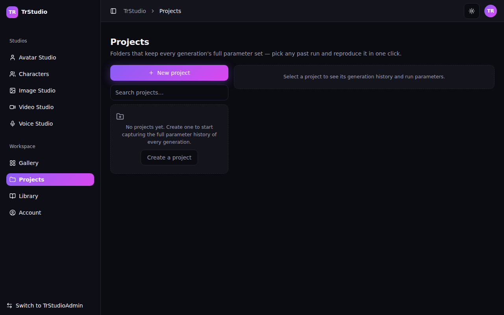
Screen flowchart
flowchart TD
P["Projects.razor"] --> C1["Project list (TryLoadProjectsAsync)"]
C1 --> S1["HttpClient GET ApiRoutes.Projects"]
S1 --> E1["WorkspaceEndpoints.ListProjectsAsync (/api/v1/projects)"]
E1 --> R1["IProjectRepository.ListAsync (owner-filtered)"]
R1 --> DB1[("Project (0600_Projects.sql)")]
P --> C2["History (LoadHistoryAsync)"]
C2 --> S2["HttpClient GET /api/v1/projects/{id}/history"]
S2 --> E2["WorkspaceEndpoints.GetProjectHistoryAsync"]
E2 --> R2["IAssetRepository.ListAsync (ProjectId)"]
R2 --> DB2[("GeneratedAsset (0100_SpineTables.sql)")]
P --> C3["New project (CreateProjectAsync)"]
C3 --> S3["HttpClient POST ApiRoutes.Projects"]
S3 --> E3["WorkspaceEndpoints.CreateProjectAsync"]
E3 --> R1
Controls on this screen
| Control | Type | Purpose | Populated / calculated by |
|---|---|---|---|
| Project list | Cards | Owner projects | objProjects (Projects.razor:235-263); FilteredProjects (Projects.razor:188-191) |
| New project | Button | Create | CreateProjectAsync (Projects.razor:312-340) |
| History DataTable | DataTable | Per-project runs | objHistory (Projects.razor:279-310); FilteredHistory by tab (Projects.razor:194-200) |
| Run parameters card | kv rows | Full stored params | objRun (selected history row) (Projects.razor:136-166) |
| Reproduce | Button | One-click reproduce | ReproduceRowAsync (Projects.razor:370-384) |
| Archive | Button | Delete project | ArchiveProjectAsync → DELETE (Projects.razor:348-366) |
Data lineage
| Control / Action | Razor (file:line) | Client/Service method (file) | API endpoint (file) | Engine service → repository (file) | Table / SQL query | Render status | Notes |
|---|---|---|---|---|---|---|---|
| List projects | Projects.razor:235-263 | GetFromJsonAsync<List<ProjectResponse>>(ApiRoutes.Projects) | WorkspaceEndpoints.ListProjectsAsync GET /api/v1/projects (WorkspaceEndpoints.cs:35,102) | IProjectRepository.ListAsync(userId) (WorkspaceEndpoints.cs:114) | SELECT … FROM "Project" WHERE "UserId"=@aUserId (ProjectRepository.cs:24; 0600_Projects.sql) | renders (seed on authed+zero rows) | Owner-scoped |
| Project history | Projects.razor:279-310 | GetFromJsonAsync<PagedResult<AssetResponse>>($"{ApiRoutes.Projects}/{id}/history") | WorkspaceEndpoints.GetProjectHistoryAsync (WorkspaceEndpoints.cs:40,223) | IAssetRepository.ListAsync(ProjectId filter) (WorkspaceEndpoints.cs:248) | SELECT … FROM "GeneratedAsset" … (AssetRepository.cs:99) | renders (seed history when zero rows) | History = project's assets |
| Create project | Projects.razor:312-340 | PostAsJsonAsync(ApiRoutes.Projects, ProjectCreateRequest) (Projects.razor:319) | WorkspaceEndpoints.CreateProjectAsync POST /api/v1/projects (WorkspaceEndpoints.cs:36,118) | IProjectRepository.InsertAsync (WorkspaceEndpoints.cs:147) | INSERT … "Project" (ProjectRepository.cs:54) | renders (optimistic add) | — |
| Archive | Projects.razor:348-366 | DeleteAsync($"{ApiRoutes.Projects}/{id}") | WorkspaceEndpoints.ArchiveProjectAsync DELETE (WorkspaceEndpoints.cs:39,201) | IProjectRepository.ArchiveAsync (WorkspaceEndpoints.cs:219) | UPDATE "Project" … IsArchived (ProjectRepository.cs:102) | renders (toast) | — |
| Reproduce row | Projects.razor:370-384 | PostAsync($"{ApiRoutes.GenerationLog}/{jobId}/reproduce") | SpineEndpoints.ReproduceFromLogAsync (SpineEndpoints.cs:214) | IJobOrchestrator.ReproduceAsync | "GenerationLog" | renders (toast; best-effort) | — |
Business rules / calculations
- History tab filter maps Images/Video/Voice → asset
Kindimage/video/audio (Projects.razor:194-200). Renameis a toast placeholder only (Projects.razor:342-346).
Known issues / gotchas
RenameProjectAsyncis a no-op toast ("Rename dialog would open here") — deliberate stub,PUT /api/v1/projects/{id}(WorkspaceEndpoints.cs:38) exists but is not called from Rename. REQ-UI-051.- Reproduce/CopyParamsJson use client-side stored rows;
CopyParamsJsonis toast-only (Projects.razor:386-387).
Creator · Compare#
- Route:
/compare - Razor file:
src/TrStudioUI/Pages/Compare/Compare.razor - Reached via: Gallery "Compare" action (breadcrumb Gallery / Compare), carrying
?assetIds=. Log in as: user 2 (creator@trstudio.test) - What this screen does: Side-by-side A/B(/C) panes across models/seeds/providers with a highlighted parameter diff. Owner-filtered server-side.
- Visual status: ✅ VISUAL-OK (runtime-confirmed 2026-07-04)
Screenshot
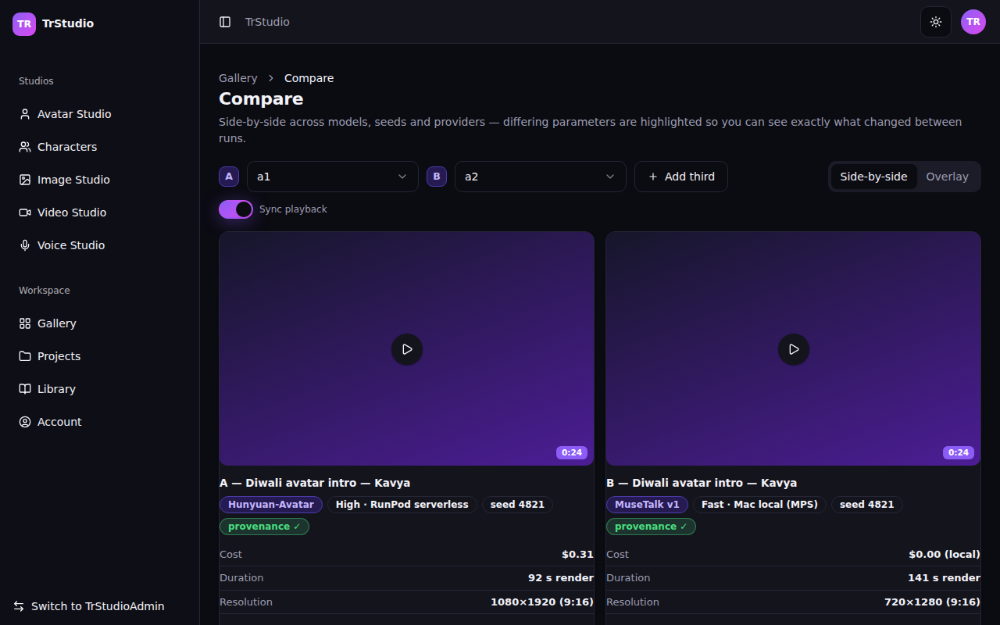
Screen flowchart
flowchart TD
P["Compare.razor"] --> C1["Load compare set (TryLoadCompareAsync)"]
C1 --> S1["HttpClient GET /api/v1/compare ?assetIds="]
S1 --> E1["Phase9Endpoints.CompareAssetsAsync (/api/v1/compare)"]
E1 --> R1["IAssetRepository.GetAsync (owner-filtered, per id)"]
R1 --> DB1[("GeneratedAsset (0100_SpineTables.sql)")]
E1 --> SV1["AssetComparer.Compare (param diff)"]
Controls on this screen
| Control | Type | Purpose | Populated / calculated by |
|---|---|---|---|
| Slot toolbar A/B/C | Selects/Button | Pick assets | objSlots, AddThird (Compare.razor:47-67,292-303) |
| View mode / sync | Tabs/Switch | Side/overlay + sync | objViewMode,objSyncPlayback |
| Result panes | Cards | Per-asset detail | Panes (Compare.razor:183-187) |
| Parameter diff table | DataTable | Highlight differences | DiffRows/VisibleDiffRows/DiffCount (Compare.razor:196-203) |
Data lineage
| Control / Action | Razor (file:line) | Client/Service method (file) | API endpoint (file) | Engine service → repository (file) | Table / SQL query | Render status | Notes |
|---|---|---|---|---|---|---|---|
| Load compare set | Compare.razor:232-259 | GetFromJsonAsync<List<CompareAsset>>($"{CompareRoute}?assetIds=…") (Compare.razor:242) | Phase9Endpoints.CompareAssetsAsync GET /api/v1/compare (Phase9Endpoints.cs:42,80) | IAssetRepository.GetAsync(id, userId) per id + AssetComparer.Compare (Phase9Endpoints.cs:102,114) | SELECT … FROM "GeneratedAsset" WHERE "GeneratedAssetId"=@aAssetId AND "UserId"=@aUserId (AssetRepository.cs:64) | renders (seed always fills when session absent/empty) | Needs ≥2 owned assets else 400; page falls to seed |
| Reproduce/Export panes | Compare.razor:305-309 | none (toast) | — | — | — | renders-empty (toast-only) | Pane reproduce/export are demo toasts |
Business rules / calculations
- Client
BuildDiffcompares model/provider·tier/resolution/cost/character/voice/script/seed/captions (Compare.razor:312-323); server also computes a diff viaAssetComparer(Phase9Endpoints.cs:114). DiffRow.Offlags a row differing when the two values are unequal (Compare.razor:374-375).
Known issues / gotchas
- Endpoint lacks a declarative
.RequireAuthorization()on the map (Phase9Endpoints.cs:42); auth is enforced in-handler viaResolveUserId→Unauthorized(Phase9Endpoints.cs:86-90), plus the app's fallback auth policy. Not a confirmed hole, but noted. - Pane Reproduce/Export are toast-only (
Compare.razor:305-309).
Creator · Library#
- Route:
/library - Razor file:
src/TrStudioUI/Pages/Library/Library.razor - Reached via: Workspace → Library. Log in as: user 2 (creator@trstudio.test)
- What this screen does: Reusable prompts/scripts/style/voice presets — search + type tabs, card grid with "Use in {Studio}", and a New/Edit Sheet. Owner-filtered server-side.
- Visual status: ✅ VISUAL-OK (runtime-confirmed 2026-07-04)
Screenshot
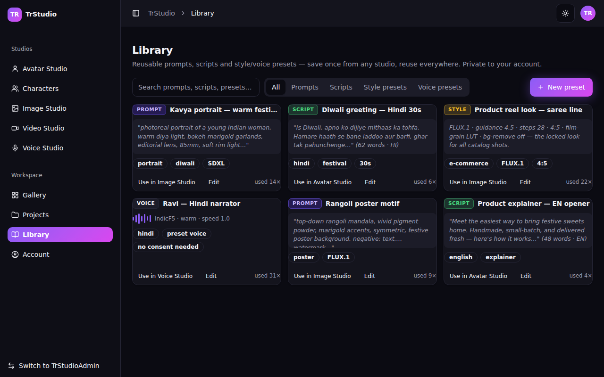
Screen flowchart
flowchart TD
P["Library.razor"] --> C1["Preset grid (TryLoadPresetsAsync)"]
C1 --> S1["HttpClient GET /api/v1/presets"]
S1 --> E1["Phase9Endpoints.ListPresetsAsync (/api/v1/presets)"]
E1 --> R1["IPresetRepository.ListAsync (owner-filtered)"]
R1 --> DB1[("Preset (1000_Presets.sql)")]
P --> C2["Save preset (SavePresetAsync)"]
C2 --> S2["HttpClient POST/PUT /api/v1/presets"]
S2 --> E2["Phase9Endpoints.CreatePresetAsync / UpdatePresetAsync"]
E2 --> R1
Controls on this screen
| Control | Type | Purpose | Populated / calculated by |
|---|---|---|---|
| Search + type tabs | Input/Tabs | Filter | objSearch,objTypeTab → Filtered (Library.razor:179,231-248) |
| Preset cards | Card grid | Presets | objPresets (Library.razor:207-229) |
| Use in {Studio} | Button | Route with preset | UsePreset → /avatar\ |
| New/Edit sheet | Sheet form | Create/edit | objForm* fields; SavePresetAsync (Library.razor:267-308) |
Data lineage
| Control / Action | Razor (file:line) | Client/Service method (file) | API endpoint (file) | Engine service → repository (file) | Table / SQL query | Render status | Notes |
|---|---|---|---|---|---|---|---|
| Load presets | Library.razor:207-229 | GetFromJsonAsync<List<PresetView>>("/api/v1/presets") (Library.razor:214) | Phase9Endpoints.ListPresetsAsync GET /api/v1/presets (Phase9Endpoints.cs:46,119) | IPresetRepository.ListAsync(userId, type) (Phase9Endpoints.cs:131) | SELECT … FROM "Preset" WHERE "UserId"=@aUserId (PresetRepository.cs:31; 1000_Presets.sql) | renders (seed when no session/empty) | Owner-scoped |
| Save preset | Library.razor:267-308 | PostAsJsonAsync/PutAsJsonAsync("/api/v1/presets"[/{id}]) (Library.razor:284,288) | Phase9Endpoints.CreatePresetAsync/UpdatePresetAsync (Phase9Endpoints.cs:47,49) | IPresetRepository.InsertAsync/UpdateAsync (Phase9Endpoints.cs:172,221) | INSERT/UPDATE "Preset" (PresetRepository.cs:61,96) | renders (optimistic upsert) | — |
Business rules / calculations
StudioName/StudioRoutemap preset type → target studio: script→Avatar, voice→Voice, else Image (Library.razor:343-356).- Note the client
PresetViewtype values areprompt/script/style/voice, while the server validatesprompt/script/style-preset/voice-preset(Phase9Endpoints.cs:26) — see gotcha.
Known issues / gotchas
- Preset-type vocabulary mismatch: the Library form/tabs use
style/voicebut the API'sPresetTypesrequiresstyle-preset/voice-preset(Phase9Endpoints.cs:26,152-155). A create/update of a style or voice preset would 400 server-side; swallowed by the client's try/catch so the card still saves locally.prompt/scriptmatch and persist. Confirmed contract mismatch. REQ-UI-053 / FN-066.
Creator · Account & spend#
- Route:
/account - Razor file:
src/TrStudioUI/Pages/Account/Account.razor - Reached via: Workspace → Account. Log in as: user 2 (creator@trstudio.test)
- What this screen does: Read-only AppManager profile + license/tier, three spend KPI cards vs monthly cap, and a recent-jobs DataTable. Owner-scoped server-side.
- Visual status: ✅ VISUAL-OK (runtime-confirmed 2026-07-04)
Screenshot
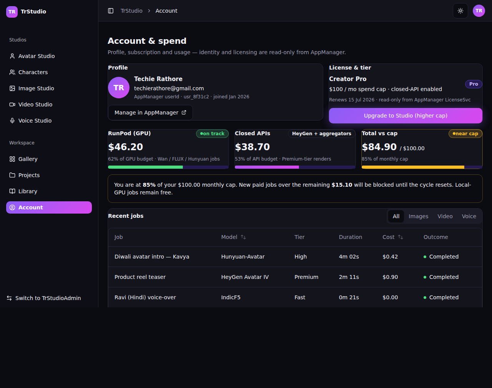
Screen flowchart
flowchart TD
P["Account.razor"] --> C1["Load snapshot (TryLoadAccountAsync)"]
C1 --> S1["HttpClient GET /api/v1/account"]
S1 --> E1["Phase9Endpoints.GetAccountAsync (/api/v1/account)"]
E1 --> SV1["IAccountService.GetSummaryAsync (userId, bearer)"]
SV1 --> R1["SpendRepository + AppManager LicenseSvc"]
R1 --> DB1[("SpendLedger (0700_SpendLedger.sql)")]
SV1 --> EX1[("AppManager LicenseSvc / profile (external)")]
Controls on this screen
| Control | Type | Purpose | Populated / calculated by |
|---|---|---|---|
| Profile card | Card | AppManager identity | objProfile (Account.razor:311-334) |
| License/tier card | Card | License + upgrade CTA | objLicense; degrades to "unavailable" (Account.razor:336-355) |
| Spend KPI cards ×3 | Card+Progress | RunPod/Closed-API/total-vs-cap | objSpend; Pct/PctValue (Account.razor:288-292) |
| Cap alert | Alert | Near/over cap | objSpend.NearCap/OverCap (Account.razor:147-164) |
| Recent jobs table | DataTable | Billed jobs | objJobs; FilteredJobs by tab (Account.razor:214-220) |
Data lineage
| Control / Action | Razor (file:line) | Client/Service method (file) | API endpoint (file) | Engine service → repository (file) | Table / SQL query | Render status | Notes |
|---|---|---|---|---|---|---|---|
| Load account snapshot | Account.razor:249-277 | GetFromJsonAsync<AccountResponse>("/api/v1/account") (Account.razor:256) | Phase9Endpoints.GetAccountAsync GET /api/v1/account (Phase9Endpoints.cs:60,306) | IAccountService.GetSummaryAsync(userId, bearer) (Phase9Endpoints.cs:319) | Spend from "SpendLedger" (0700_SpendLedger.sql); license/profile from external AppManager LicenseSvc | renders (seed when no session/empty jobs) | DTOs are intentionally loose — unmatched shapes → seed (Account.razor:390-397) |
| Manage/Upgrade | Account.razor:279-283 | none (toast) | — | — (AppManager is the system of record) | — | renders-empty (toast-only) | Identity/licensing live in AppManager |
Business rules / calculations
Pct/PctValuecompute percentage-of-cap for the progress bars (Account.razor:288-292).- GPU/API budgets derived as 75% of the monthly cap in
SpendView.FromResponse(Account.razor:373-374). - License unavailable → warning card with limited-features message (
Account.razor:59-67,344-349).
Known issues / gotchas
- Manage-in-AppManager and Upgrade are toast-only by design — AppManager is the external system of record for identity/licensing. Not a defect.
- Account endpoint has no declarative
.RequireAuthorization()on the map (Phase9Endpoints.cs:60); enforced in-handler + fallback policy.
DEFECTS FOUND#
- Voice Studio — preset-voice list route mismatch. Client calls
GET /api/v1/voice/presets; server route is/api/v1/voice/preset-voices. Always 404 (swallowed) → the studio only ever shows seed voices.VoiceStudio.razor:360vsVoiceEndpoints.cs:27. Owning REQ: REQ-UI-030 / REQ-FN-031. (Secondary: returned DTO shape also differs —Id/NamevsVoiceId/DisplayName.) - Voice Studio — synthesize route mismatch. Client posts
POST /api/v1/voice(group root); synthesize endpoint is/api/v1/voice/synthesize. Always 404 (swallowed) → no live TTS.VoiceStudio.razor:452vsVoiceEndpoints.cs:28. Owning REQ: REQ-UI-030 / REQ-FN-033. - Avatar Studio — voice-preview route mismatch.
GenerateVoiceAsyncpostsPOST /api/v1/voice(root); no route there (synth is/synthesize). Always 404 (swallowed).AvatarStudio.razor:425vsVoiceEndpoints.cs:28. Owning REQ: REQ-UI-010 / REQ-FN-031. - Avatar Studio — script-assist route does not exist.
ScriptAssistAsyncpostsPOST /api/v1/rag/script-assist; RAG only mapsscript/captions/usage. Always 404 (swallowed).AvatarStudio.razor:441vsRagEndpoints.cs:25-27. Owning REQ: REQ-UI-010 / RAG-001. - Video Studio — timeline-edit route mismatch (wrong prefix).
EditAsyncpostsPOST /api/v1/avatar/edit; the edit endpoint is/api/v1/video/edit(Avatar group has no/edit). Always 404 (swallowed) → toolbar edits never reach the server.VideoStudio.razor:535vsVideoEndpoints.cs:29/AvatarEndpoints.cs:26-28. Owning REQ: REQ-UI-040 / REQ-FN-053. - Library — preset-type vocabulary mismatch. Form/tabs emit
style/voice; APIPresetTypesrequiresstyle-preset/voice-preset, so creating/updating a style or voice preset 400s server-side (swallowed; card still saves locally).prompt/scriptare unaffected.Library.razor:126-127,343-356vsPhase9Endpoints.cs:26,152-155. Owning REQ: REQ-UI-053 / FN-066.
Non-defect notes (not logged): Character-bible Sheet renders static copy and never calls GET /api/v1/characters/{id}/bible (feature not wired, not a broken route); Projects "Rename", Compare/Gallery-bar bulk actions, and Account Manage/Upgrade are intentional toast stubs; Compare/Presets/Account/Assets/Projects/Jobs endpoints rely on in-handler ResolveUserId + the app's fallback auth policy rather than a declarative .RequireAuthorization() — auth is still enforced.